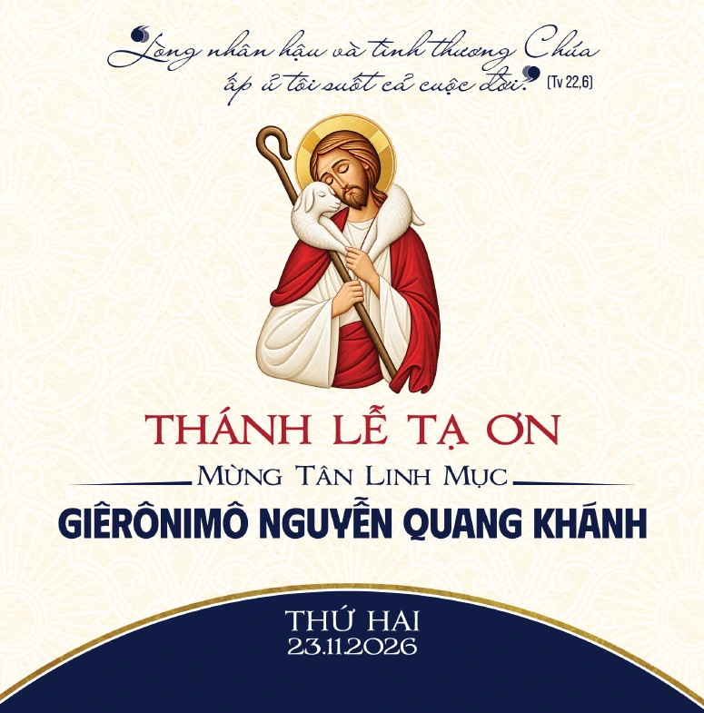
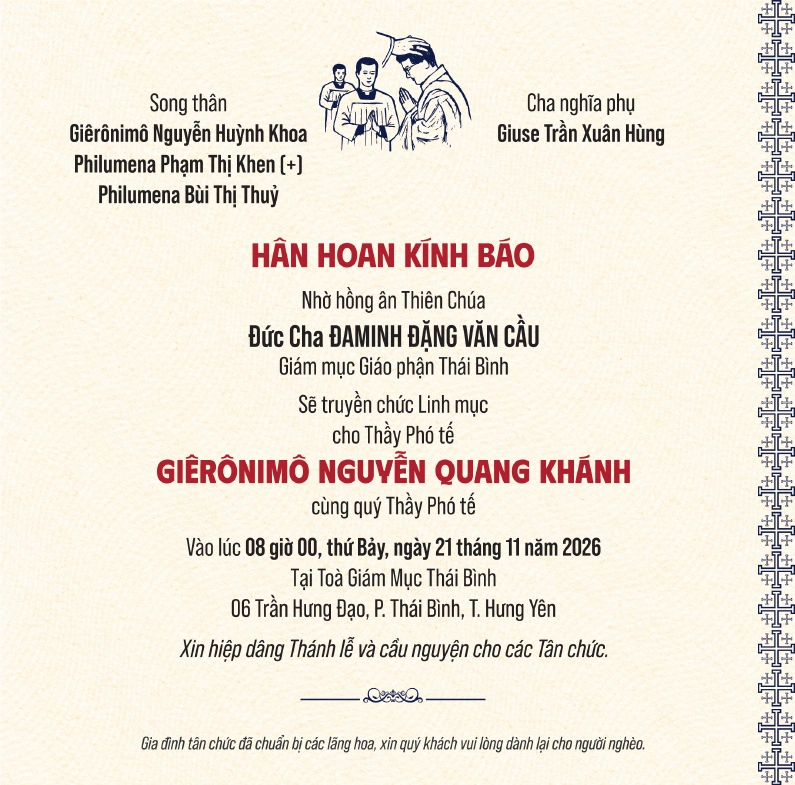

23.11 · 09h00
Thánh lễ Tạ ơn
Thánh đường Giáo xứ đền thánh Lòng Chúa Thương Xót Bác Trạch
Mở Google Maps
Hồng ân Thiên Chúa
08h00 · Thứ Bảy, 21.11.2026
Tòa Giám Mục Thái Bình

Trân trọng kính mời
09h00 · Thứ Hai, 23.11.2026
Đền Thánh Bác Trạch
 Quý khách
Quý khách
Thứ Hai · 23.11.2026
Xin quý cha mang phẩm phục màu trắng.

Địa điểm
23.11 · 09h00
Thánh đường Giáo xứ đền thánh Lòng Chúa Thương Xót Bác Trạch
Mở Google Maps21.11 · 08h00
Tòa Giám Mục Thái Bình
06 Trần Hưng Đạo, P. Thái Bình, T. Hưng Yên